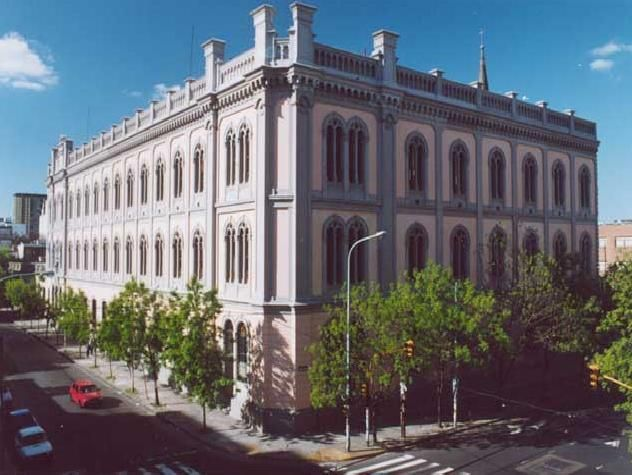

Compromiso
Renunció a una vida más cómoda para dedicarse a la educación.
Rostros de la Santidad Escolapia
San José de Calasanz
Valores convertidos en acciones
El testimonio de San José de Calasanz se manifestó principalmente a través de sus decisiones y acciones. Al conocer la situación de los niños pobres de Roma, no permaneció indiferente, sino que decidió transformar esa realidad mediante la educación.
Renunció a una vida más cómoda para dedicarse a la educación.
Puso en el centro a quienes estaban excluidos de la enseñanza.
Continuó defendiendo su proyecto durante sus mayores dificultades.
Entendió la educación como una misión y no como una forma de obtener prestigio.
Reconoció la dignidad y las capacidades de cada estudiante.
Unió la fe, la ciencia, la cultura y la formación humana.
Su perseverancia durante la crisis de las Escuelas Pías constituye una parte fundamental de su testimonio. Aunque murió sin observar la recuperación completa de la Orden, mantuvo la esperanza de que el proyecto sobreviviría.
Una misión que continúa
El legado de San José de Calasanz continúa presente en las instituciones y comunidades escolapias. Su aporte no consistió solamente en fundar una escuela o una orden religiosa, sino en defender una nueva manera de comprender la educación.
Para Calasanz, la enseñanza no debía ser un privilegio reservado a quienes poseían dinero. Todos los niños merecían la oportunidad de aprender, crecer y prepararse para el futuro. De esta manera, convirtió la educación en una forma de servicio y en una herramienta de transformación personal y social.
Su legado puede reconocerse en la prioridad concedida a la infancia, la atención a las personas más vulnerables, la formación integral, el valor de los docentes y la unión entre fe y cultura. El lema “Piedad y Letras” continúa expresando la misión de educar tanto la inteligencia como la dimensión humana y espiritual.
Actualmente, las Escuelas Pías continúan desarrollando su misión educativa en diferentes partes del mundo. Cada colegio escolapio que busca formar a niños y jóvenes mediante los conocimientos, los valores y la fe mantiene viva una parte del proyecto iniciado por Calasanz en Roma.

Una propuesta vigente
El pensamiento de Calasanz continúa siendo actual porque sostiene que la educación debe incluir y acompañar a todas las personas. Su propuesta invita a que las escuelas no se limiten a transmitir conocimientos, sino que también formen estudiantes responsables, solidarios y capaces de transformar su comunidad.
Continuar el recorrido
El proyecto se completa con un video, un mapa, materiales digitales de las Escuelas Pías y la bibliografía utilizada para la investigación.
Ir a Recursos y fuentes